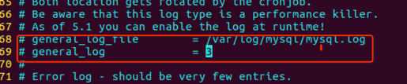

字段查询
实现sql中where的功能，调用过滤器filter()、exclude()、get()，下面以filter()为例。
通过"属性名_id"表示外键对应对象的id值。
语法如下：
说明：属性名称和比较运算符间使用两个下划线，所以属性名不能包括多个下划线。
属性名称__比较运算符=值
查看mysql数据库日志
查看mysql数据库日志可以查看对数据库的操作记录。 mysql日志文件默认没有产生，需要做如下配置：
sudo vi /etc/mysql/mysql.conf.d/mysqld.conf

把68，69行前面的#去除，然后保存并使用如下命令重启mysql服务。
sudo service mysql restart
使用如下命令打开mysql日志文件。
sudo tail -f /var/log/mysql/mysql.log #可以实时查看数据库的日志内容
打开booktest/views.py文件，在index视图中编写如下查询代码：
条件运算符
1) 查询等
exact：表示判等。
例：查询编号为1的图书。
list=BookInfo.objects.filter(id__exact=1)
可简写为：
list=BookInfo.objects.filter(id=1)
2) 模糊查询
contains：是否包含。
说明：如果要包含%无需转义，直接写即可。
例：查询书名包含'传'的图书。
list = BookInfo.objects.filter(btitle__contains='传')
startswith、endswith：以指定值开头或结尾。
例：查询书名以'部'结尾的图书
list = BookInfo.objects.filter(btitle__endswith='部')
以上运算符都区分大小写，在这些运算符前加上i表示不区分大小写，如iexact、icontains、istartswith、iendswith.
3) 空查询
isnull：是否为null。
例：查询书名不为空的图书。
list = BookInfo.objects.filter(btitle__isnull=False)
4) 范围查询
in：是否包含在范围内。
例：查询编号为1或3或5的图书
list = BookInfo.objects.filter(id__in=[1, 3, 5])
5) 比较查询
gt、gte、lt、lte：大于、大于等于、小于、小于等于。
例：查询编号大于3的图书
list = BookInfo.objects.filter(id__gt=3)
不等于的运算符，使用exclude()过滤器。
例：查询编号不等于3的图书
list = BookInfo.objects.exclude(id=3)
6) 日期查询
year、month、day、week_day、hour、minute、second：对日期时间类型的属性进行运算。
例：查询1980年发表的图书。
list = BookInfo.objects.filter(bpub_date__year=1980)
例：查询1980年1月1日后发表的图书。
list = BookInfo.objects.filter(bpub_date__gt=date(1990, 1, 1))
F对象
之前的查询都是对象的属性与常量值比较，两个属性怎么比较呢？ 答：使用F对象，被定义在django.db.models中。
语法如下：
F(属性名)
例：查询阅读量大于等于评论量的图书。
from django.db.models import F
...
list = BookInfo.objects.filter(bread__gte=F('bcomment'))
可以在F对象上使用算数运算。
例：查询阅读量大于2倍评论量的图书。
list = BookInfo.objects.filter(bread__gt=F('bcomment') * 2)
Q对象
多个过滤器逐个调用表示逻辑与关系，同sql语句中where部分的and关键字。
例：查询阅读量大于20，并且编号小于3的图书。
list=BookInfo.objects.filter(bread__gt=20,id__lt=3)
或
list=BookInfo.objects.filter(bread__gt=20).filter(id__lt=3)
如果需要实现逻辑或or的查询，需要使用Q()对象结合|运算符，Q对象被义在django.db.models中。
语法如下：
Q(属性名__运算符=值)
例：查询阅读量大于20的图书，改写为Q对象如下。
from django.db.models import Q
...
list = BookInfo.objects.filter(Q(bread__gt=20))
Q对象可以使用&、|连接，&表示逻辑与，|表示逻辑或。
例：查询阅读量大于20，或编号小于3的图书，只能使用Q对象实现
list = BookInfo.objects.filter(Q(bread__gt=20) | Q(pk__lt=3))
Q对象前可以使用~操作符，表示非not。
例：查询编号不等于3的图书。
list = BookInfo.objects.filter(~Q(pk=3))
聚合函数
使用aggregate()过滤器调用聚合函数。聚合函数包括：Avg，Count，Max，Min，Sum，被定义在django.db.models中。
例：查询图书的总阅读量。
from django.db.models import Sum
...
list = BookInfo.objects.aggregate(Sum('bread'))
注意aggregate的返回值是一个字典类型，格式如下：
{'聚合类小写__属性名':值}
如:{'sum__bread':3}
使用count时一般不使用aggregate()过滤器。
例：查询图书总数。
list = BookInfo.objects.count()
注意count函数的返回值是一个数字。